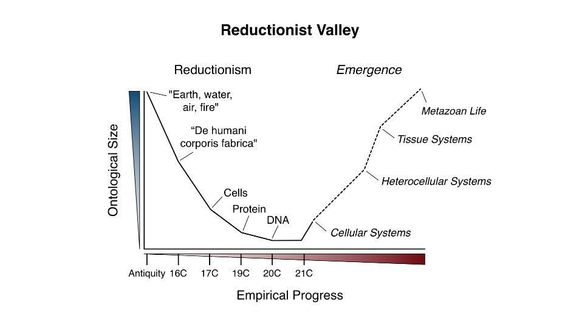

4 Science
A paradigm is an internally coherent system of thought that results in useful insights but also finds it difficult to escape its own assumptions.
4.1 Dualism
If science is the combination of logical definitions with empirical observations, theology is science without the observation. It is a web of human definitions, and nothing more.
Although it makes for abysmal science, the theological stance is a great way to sound authoritative while you spout bullshit. The self-styled libertarian ‘philosopher’ Ayn Rand was a master of this technique. Here she is laying out her philosophy of objectivism:
The formula defining the concept of existence and the rule of all knowledge: A is A. A thing is itself. You have never grasped the meaning of [this] statement. I am here to complete it: Existence is Identity, Consciousness is Identification.Rand’s writing is a tour-de-force in theological nonsense. Start with a tautology (A = A). Follow it up with some weighty definitions (existence = identity). Claim you have a ‘rule for all knowledge’. Marvelous bullshit.
4.2 Reductionism
Austin
The Fallacy of Reductionism is that reductionism is always the best way to investigate the world, and that more knowledge will always be gleaned from breaking phenomena into parts than contemplating them whole.
The Trap of Reductionism has been that because reductionism was so successful in explaining the dead things upon which the Scientific Revolution was founded – planets, light, falling objects etc. – we were insufficiently sceptical about its adequacy as a method to investigate more complex, living things. Yet, we proceeded anyway with the unfortunate consequence that we have delayed, and sometimes derailed, our comprehension of many living things, including ourselves.

The trap can also be envisaged as a valley. Hence, Christopher Tape, a biologist, depicts the broad history of biological enquiry as being a ‘downward’ journey of reductionism, now transitioning into an ‘upward’ journey to discoveremergent properties that cannot be gleaned from knowledge of the parts. (Note the appearance of ‘systems’ and ‘life’ on the right-hand side of the Figure)
Similar trajectories could be drawn for many other natural and social sciences, all ‘pulled down’ to a reductionist vision. The point is not that this has not yielded considerable benefit, only that it promoted a method of investigation whose cost was the postponement of our comprehension of emergent properties. As that recognition has sunk in, many disciplines have recognized they have reached the point of diminishing returns to reductionism.
Encouragingly, there is now a ‘Systemic Spring’ underway in which multiple disciplines are racing to incorporate the insights of complexity thinking into their subjects, with the natural and social sciences having the most to gain. Indeed, in general terms, the more ‘complex’ the object of a discipline’s enquiry, the more there is to gain – or, equivalently, the more that the reductionist world view has inadvertently held back.
As Brian Arthur, one of the key proponents of complexity in the field of economics, recently expressed it: ‘complexity is not a science, rather it is a movement within science.’
Werner Heisenberg, one of the key pioneers of quantum mechanics, sensed how deeply our penchant to divide had sunk and how difficult it would be to root out:
‘The Cartesian partition has penetrated deeply into the human mind during the three centuries following Descartes and it will take a long time for it to be replaced by a really different attitude toward the problem of reality.’
What is genuinely exciting about systemic science is that it introduces a rigorous way of seeing relation over part.
Gregory Bateson, one of the most prominent system thinkers of the 20th Century, who tried to lean against the reductionist tide in the social sciences when it was at its height, said:
‘The major problems in the world are the result of the difference between how nature works and the way people think.’
Austin (2021) The Matrix of the Emissary - Market Primacy and The Sustainability Crisis
4.3 Enligthenment
Intriguingly, we use the term Enlightenment for two major cognitive developments: the Western Enlightenment of the 17th Century and the Buddhist Enlightenment of 5th Century BC. They offer strikingly divergent recommendations about how to be in the world. Western Enlightenment is about using reason for human progress, crystallized in a quantitative-based scientific method. Buddhist Enlightenment intuited that human striving is the source of unhappiness and that progress has treadmill or trap-like characteristics. The Western Enlightenment, right from its Baconian outset extolled an extractive attitude towards Nature – ‘let the human race recover that right over Nature which belongs to it by divine bequest’. It is a worldview that leads one eventually to describe Nature as an ‘asset’ and as ‘natural capital’. Buddhism does not even recognize Nature as separate.
Possibly the time is ripe for some Third Enlightenment – a meta-Enlightenment?! – which might reconcile why it is that humankind already hastwo major Enlightenments on the books.
Austin (2021) The Matrix of the Emissary - Market Primacy and The Sustainability Crisis
4.4 Scale
Chu Significance
The size of scientific fields may impede the rise of new ideas. Examining 1.8 billion citations among 90 million papers across 241 subjects, we find a deluge of papers does not lead to turnover of central ideas in a field, but rather to ossification of canon. Scholars in fields where many papers are published annually face difficulty getting published, read, and cited unless their work references already widely cited articles. New papers containing potentially important contributions cannot garner field-wide attention through gradual processes of diffusion. These findings suggest fundamental progress may be stymied if quantitative growth of scientific endeavors—in number of scientists, institutes, and papers—is not balanced by structures fostering disruptive scholarship and focusing attention on novel ideas.
Chu Abstract
In many academic fields, the number of papers published each year has increased significantly over time. Policy measures aim to increase the quantity of scientists, research funding, and scientific output, which is measured by the number of papers produced. These quantitative metrics determine the career trajectories of scholars and evaluations of academic departments, institutions, and nations. Whether and how these increases in the numbers of scientists and papers translate into advances in knowledge is unclear, however. Here, we first lay out a theoretical argument for why too many papers published each year in a field can lead to stagnation rather than advance. The deluge of new papers may deprive reviewers and readers the cognitive slack required to fully recognize and understand novel ideas. Competition among many new ideas may prevent the gradual accumulation of focused attention on a promising new idea. Then, we show data supporting the predictions of this theory. When the number of papers published per year in a scientific field grows large, citations flow disproportionately to already well-cited papers; the list of most-cited papers ossifies; new papers are unlikely to ever become highly cited, and when they do, it is not through a gradual, cumulative process of attention gathering; and newly published papers become unlikely to disrupt existing work. These findings suggest that the progress of large scientific fields may be slowed, trapped in existing canon. Policy measures shifting how scientific work is produced, disseminated, consumed, and rewarded may be called for to push fields into new, more fertile areas of study.
Chu (2021) Slowed canonical progress in large fields of science (pdf)
Eugyppius on Chu
At scale, the scientific enterprise rapidly becomes a kind of intramural spectator sport, with the vast majority of “scientists” reduced to passively observing the dialogue unfolding among higher-ups within their own field, while most of their own work – undertaken for careerist purposes – goes unread and unnoticed.